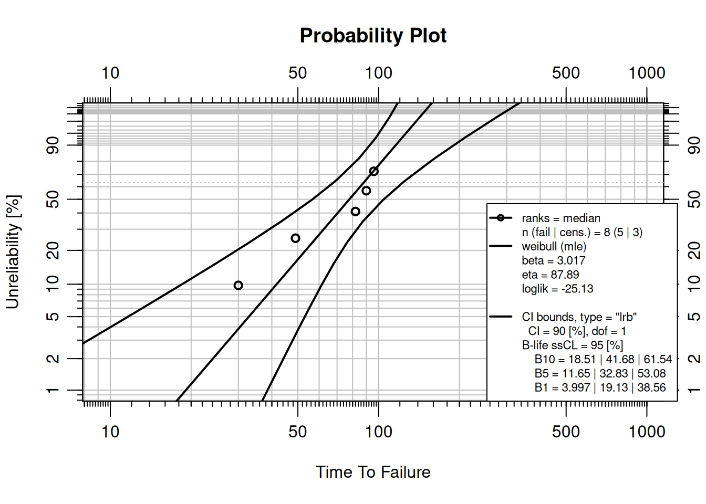
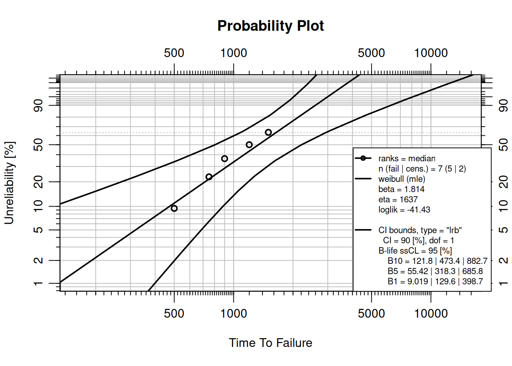
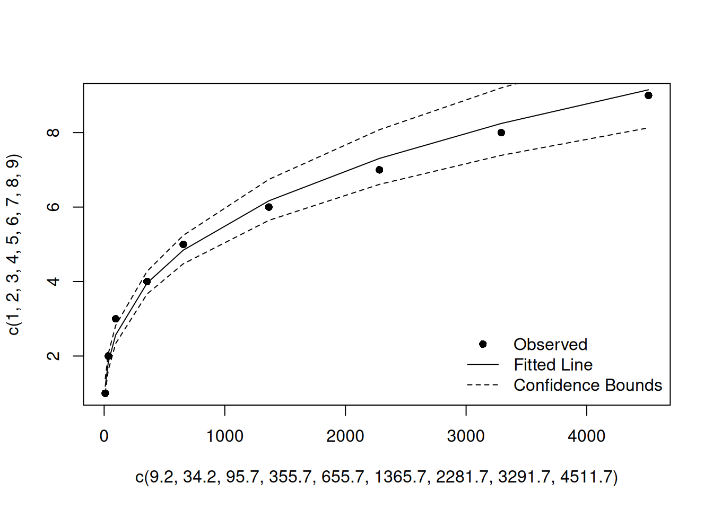

install.packages("quarto")
quarto::quarto_version() # confirm the CLI is found9 Reproducible Reliability Analysis with Quarto
Scripted R solves the computation problem — analyses are exact, repeatable, and version-controlled. But a folder of R scripts and PNG plots is still hard to share, audit, or publish. Quarto (Allaire et al. 2024) solves the documentation problem by weaving code, equations, narrative, and figures into a single re-executable source file. The result is a document that is both the analysis and the report — one that any colleague can re-run months later and reproduce every number exactly. See Section 9.9 for guidance on when to choose Quarto over ReliaShiny or AI/MCP.
9.1 Learning Objectives
By the end of this chapter, you will be able to:
- Explain what reproducibility means in a reliability analysis context and why it matters for audits, re-analysis, and team collaboration.
- Describe the role of Quarto as a literate-programming tool for combining R code, equations, and narrative.
- Create a
.qmddocument with a YAML front matter block, code chunks, and inline LaTeX equations. - Render a
.qmdto HTML, PDF, and Word from the R console or terminal. - Use parameterized Quarto reports to run the same analysis on different datasets without editing code.
- Embed WeibullR, ReliaGrowR, and ReliaLearnR analyses inside a
.qmdand save publication-quality plots. - Distinguish when to use Quarto, ReliaShiny, and AI/MCP for a given reliability task.
9.2 Why Reproducibility Matters
Audits and Regulatory Compliance
Defence, aerospace, nuclear, and medical-device industries require that every reliability analysis be traceable — the data, the method, and the software version. A Quarto document combined with an renv.lock package snapshot provides an exact, time-stamped audit trail. Regulators can re-run the analysis years later and confirm the results.
Re-Analysis and Collaboration
A colleague inheriting a folder of PNG plots and a spreadsheet cannot reproduce the analysis. A .qmd file is self-contained: every assumption, model choice, and filtering step is visible in the code. When field data is updated, re-running the document updates every table, plot, and inline number automatically.
Version Control
Quarto source files are plain text. They can be committed to Git alongside data, line-diffed, and reviewed in pull requests. Changes to an analysis are visible as diffs — something not possible with binary spreadsheets or saved Shiny sessions.
TipReview
Name two situations in a reliability engineering context where a fully reproducible analysis would be required.
Answer
Examples include: regulatory or contractual audits requiring traceability of parameter estimates; re-analysis after a field event using updated failure data; peer review of a reliability growth claim; handing off an analysis to a new team member.9.3 Introduction to Quarto
Quarto is an open-source scientific and technical publishing system built on Pandoc and maintained by Posit. A .qmd file is a plain-text document that interleaves YAML front matter, Markdown prose, and executable code chunks. When rendered, Quarto executes the code, captures the output, and produces HTML, PDF, Word, or presentations from the same source.
| Term | Meaning |
|---|---|
.qmd |
Quarto Markdown source file |
| YAML front matter | Document metadata block delimited by --- |
| Code chunk | Fenced block (```{r}) containing executable R code |
| Chunk option | #|-prefixed line controlling chunk behaviour (eval, echo, fig-cap) |
| Render | Convert the .qmd to its target format |
_quarto.yml |
Project-level configuration for multi-file books and websites |
Installing Quarto
The Quarto CLI is a standalone download from https://quarto.org/docs/get-started/. The quarto R package (Allaire 2024) provides R-level wrappers:
Anatomy of a .qmd File
A minimal .qmd has three zones: a YAML front matter block, Markdown prose, and fenced R chunks.
---
title: "My Reliability Report"
author: "Your Name"
date: today
format: html
---
## Introduction
This report analyses pump failure data using the Weibull distribution.
```{r}
#| echo: true
library(WeibullR)
failures <- c(30, 49, 82, 90, 96)
fit <- wblr.fit(wblr(failures), method.fit = "mle")
plot(fit)
```Rendering
From the R console:
library(quarto)
quarto_render("my-report.qmd") # default format
quarto_render("my-report.qmd", output_format = "pdf")
quarto_render("my-report.qmd", output_format = "docx")From the terminal:
quarto render my-report.qmd
quarto render my-report.qmd --to pdf9.4 A Basic Reliability Report in Quarto
YAML Front Matter for Reliability Reports
A professional deliverable typically targets both HTML and PDF. The code-fold: true option collapses code blocks in HTML output, keeping reports tidy for stakeholders while keeping the code accessible.
---
title: "Pump Fleet Weibull Analysis"
author: "Reliability Engineering"
date: today
format:
html:
toc: true
number-sections: true
code-fold: true
code-tools: true
pdf:
toc: true
number-sections: true
execute:
echo: true
warning: false
message: false
---Embedding Equations
Quarto uses LaTeX for mathematical notation. Display equations are delimited by $$...$$:
The Weibull reliability function is:
$$R(t) = e^{-(t/\eta)^\beta}$$
where $\beta$ is the shape parameter and $\eta$ is the characteristic life.Code Chunk Options
| Option | Effect |
|---|---|
#\| eval: false |
Show code but do not run it |
#\| echo: false |
Run code but hide the source block |
#\| include: false |
Run code, hide both code and output |
#\| fig-cap: "..." |
Add a figure caption |
#\| fig-width: 6 |
Set output figure width in inches |
#\| label: fig-xxx |
Enable cross-referencing with @fig-xxx |
#\| cache: true |
Cache the result; re-run only when the chunk changes |
A Complete Weibull Report Block
library(WeibullR)
failures <- c(30, 49, 82, 90, 96)
suspensions <- c(100, 45, 10)
obj <- wblr(failures, suspensions)
obj <- wblr.fit(obj, method.fit = "mle")
obj <- wblr.conf(obj, method.conf = "lrb")
plot(obj)
Inline R expressions embed computed values directly in prose without hard-coding numbers — a key reproducibility benefit. For example:
The fitted shape parameter is $\hat{\beta}$ = `r round(obj$fit[[1]]$beta, 2)`.When the analysis is re-run with updated data, this sentence updates automatically.
NoteTry It
Create a file pump-report.qmd with the YAML front matter shown above. Add a code chunk that fits a Weibull model to failure times c(120, 205, 310, 445, 590, 780) using MLE and plots the result. Render it to HTML.
Solution
library(WeibullR)
failures <- c(120, 205, 310, 445, 590, 780)
obj <- wblr.fit(wblr(failures), method.fit = "mle")
plot(obj)quarto_render("pump-report.qmd") in a separate R session to render.
9.5 Parameterized Reports
What Are Parameters?
Quarto parameters let a single .qmd template run against different datasets or settings without touching any code. Parameters are declared in YAML and accessed in R via params$name.
Declaring Parameters in YAML
---
title: "Reliability Report"
params:
dataset: "pump_failures.csv"
component: "Pump A"
conf_level: 0.90
---Using Parameters in Code
data <- read.csv(params$dataset)
failures <- data$time[data$event == 1]
cat("Component:", params$component, "\n")
cat("Confidence level:", params$conf_level, "\n")Rendering Multiple Reports
A loop over quarto_render() produces one report per component from a single template:
library(quarto)
components <- c("Pump A", "Pump B", "Compressor C")
datasets <- c("pump_a.csv", "pump_b.csv", "comp_c.csv")
for (i in seq_along(components)) {
quarto_render(
"reliability-report.qmd",
execute_params = list(
dataset = datasets[i],
component = components[i]
),
output_file = paste0(gsub(" ", "_", components[i]), "_report.html")
)
}
TipReview
A reliability engineer must produce monthly Weibull reports for six pump models. Without parameterization, how many .qmd files are needed? With parameterization?
Answer
Without parameters: six separate files, each requiring manual edits when the analysis changes. With parameters: one template file rendered six times — changes to the analysis logic are made in one place and propagate to all reports automatically.9.6 Integration with Reliability R Packages
All reliability packages used in this book work inside .qmd files without modification — Quarto captures their output automatically.
WeibullR — Life Data Analysis
See Chapter 3 for the statistical background. Inside a .qmd, a complete Weibull analysis is:
library(WeibullR)
failures <- c(500, 1200, 900, 1500, 750)
suspensions <- c(2000, 2000)
obj <- wblr(x = failures, s = suspensions)
obj <- wblr.fit(obj, method.fit = "mle")
obj <- wblr.conf(obj, method.conf = "lrb")
plot(obj)
ReliaGrowR — Reliability Growth
See Chapter 4 for Crow-AMSAA model details:
library(ReliaGrowR)
times <- c(9.2, 25, 61.5, 260, 300, 710, 916, 1010, 1220)
failures <- rep(1, length(times))
rga_fit <- rga(times, failures)
plot(rga_fit)
ReliaLearnR — RAM Metrics
See Chapter 1 for the RAM helper functions:
library(ReliaLearnR)
reliability <- rel(outageTime = 10, totalTime = 5 * 365)
availability <- avail(unavailTime = 25, totalTime = 5 * 365)
failure_rate <- fr(failures = 12, totalTime = 5 * 365)
cat(sprintf("Reliability: %.1f%%\n", reliability * 100))Reliability: 99.5%cat(sprintf("Availability: %.1f%%\n", availability * 100))Availability: 98.6%cat(sprintf("Failure rate: %.4f failures/day\n", failure_rate))Failure rate: 0.0066 failures/daySaving Plots
To save a static plot from inside a .qmd for use in presentations or other documents:
png("weibull_plot.png", width = 800, height = 600, res = 150)
plot(obj)
dev.off()For interactive ReliaPlotR plots (see Chapter 7):
library(ReliaPlotR)
library(htmlwidgets)
p <- plotly_wblr(obj)
saveWidget(p, "weibull_interactive.html", selfcontained = TRUE)
NoteTry It
In a .qmd file, fit a Crow-AMSAA model to failure times c(50, 100, 180, 310, 450, 620) with T = 800, plot the result, and add a prose sentence using inline R that reports the fitted \(\hat{\beta}\).
Solution
library(ReliaGrowR)
times <- c(50, 100, 180, 310, 450, 620)
failures <- rep(1, length(times))
fit <- rga(times, failures)
plot(fit)Inline sentence: "The fitted shape parameter is $\hat{\beta}$ = `r round(fit$betas, 3)`."9.7 This Book Is Built with Quarto
NoteThis Book Is a Quarto Project
Reliability Analysis with R: A Companion Guide is itself built with Quarto. Every chapter is a .qmd file. Every code block you have read in this book was executed by Quarto at render time and its output captured automatically. The project configuration lives in _quarto.yml at the root of the book directory, which specifies the chapter order, HTML theme (cosmo/darkly), PDF document class (scrreprt), TOC depth, and global chunk options (echo: true, warning: false, message: false).
To build the book yourself, clone the repository and run:
library(quarto)
quarto_render() # renders all chapters in _quarto.yml orderor from the terminal:
quarto renderThe rendered book is published to GitHub Pages on each push — the online version always reflects the exact source in the repository.
9.8 Quarto Books and Multi-File Projects
A Quarto book is a type: book project where _quarto.yml controls everything: chapter order, sidebar search, bibliography, HTML theme, PDF layout, and global execution options. Adding a new chapter requires only creating a .qmd file and adding one line to the chapters list — no other configuration changes.
The global execute: block in _quarto.yml sets default chunk behaviour across all chapters:
execute:
echo: true
warning: false
message: false
cache: falseIndividual chunks can override these defaults with their own #| options. cache: false is appropriate during active writing to ensure output is always fresh; switch to #| cache: true on individual chunks for computationally expensive analyses.
9.9 When to Use Quarto vs. ReliaShiny vs. AI/MCP
Each tool in the ReliaLearnR ecosystem excels in a different context. Quarto is the right choice when the deliverable must be reproducible, auditable, or version-controlled. ReliaShiny (see Chapter 8) suits rapid exploration or stakeholder demonstrations with no R requirement. AI + MCP (see Chapter 10) enables conversational, interpretive, and iterative analysis in plain language.
| Situation | Quarto | ReliaShiny | AI + MCP |
|---|---|---|---|
| Reproducible analysis with version control | ✅ | ||
| Automated batch reports across multiple datasets | ✅ | ||
| Embedding results in a book, paper, or report | ✅ | ||
| Custom plot formatting and multi-panel layouts | ✅ | ||
| Long-running or computationally intensive analyses | ✅ | ||
| Quick one-off exploration without writing code | ✅ | ||
| Sharing analysis with non-R users via a browser | ✅ | ||
| Teaching or live stakeholder demonstration | ✅ | ✅ | |
| Conversational model selection and interpretation | ✅ | ||
| Iterating on an analysis in plain language | ✅ | ||
| Explaining results to a non-technical audience | ✅ | ✅ |
9.10 Getting Help
help(package = "quarto")- Quarto documentation: https://quarto.org/docs/guide/
- Quarto for R: https://quarto.org/docs/computations/r.html
- Quarto gallery: https://quarto.org/docs/gallery/
9.11 Summary
Quarto is the standard tool for reproducible, publishable reliability analysis in R. By combining code, equations, prose, and figures in a single .qmd source file, it eliminates the gap between analysis and report and makes every result traceable back to its inputs.
- Reproducibility: a
.qmdfile is the complete specification of an analysis; anyone with the file, data, and packages can regenerate every number and plot. - Parameterization:
params:in YAML enables one template to produce reports for many components, datasets, or time periods without changing any code. - Integration: WeibullR, ReliaGrowR, WeibullR.ALT, ReliaPlotR, and ReliaLearnR all work inside
.qmdfiles without modification. - Formats:
quarto_render()produces HTML, PDF, Word, and more from the same source file. - Books: this guide is a
type: bookQuarto project;_quarto.ymlcontrols chapter order, theme, sidebar, and global chunk options. - Complement, not replacement: Quarto does not replace ReliaShiny (use ReliaShiny for point-and-click exploration) or AI + MCP (use MCP for conversational analysis) — each tool excels in a different context (see Section 9.9).
9.12 Review Questions
TipReview Questions
1. What is the difference between #| eval: false and #| echo: false in a Quarto code chunk?
Answer
eval: false shows the code but does not run it — no output is produced. echo: false runs the code and captures the output but hides the code block from the reader.
2. You need to produce monthly Weibull reports for eight pump families. How would you structure a parameterized Quarto workflow?
Answer
Declareparams: dataset: and params: component: in the YAML front matter. Write the analysis once using params$dataset and params$component. Call quarto_render() in a loop with different execute_params for each family. Eight reports are produced from one .qmd source file.
3. Name two chunk options that control figure output in a Quarto document.
Answer
Any two of:fig-cap (caption text), fig-width / fig-height (dimensions in inches), label (enables @fig-xxx cross-referencing), fig-alt (accessibility alt text).
4. This book is itself a Quarto project. What file controls the chapter order, HTML theme, and global chunk options?
Answer
_quarto.yml — the project configuration file at the root of the book directory.
5. When would you choose ReliaShiny over a Quarto document for a reliability analysis?
Answer
When the audience does not use R (ReliaShiny requires no coding), when the goal is rapid interactive exploration rather than a deliverable document, or when a live stakeholder demonstration is needed.
Allaire, JJ. 2024. Quarto: R Interface to Quarto Markdown Publishing System. https://CRAN.R-project.org/package=quarto.
Allaire, JJ, Charles Teague, Carlos Scheidegger, Yihui Xie, and Christophe Dervieux. 2024. Quarto. https://doi.org/10.5281/zenodo.5960048.